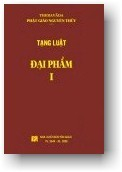
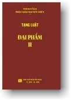

| |
|
 |
Tạng Luật
Vinaya Pitaka
Đại Phẩm
Mahāvagga
Tỳ-khưu Indacanda
Nguyệt Thiên dịch
|
 |
|
Lưu ý:
Ðọc với phông chữ VU Times
(Viet-Pali Unicode) |
| |
MỤC LỤC |
|
[01a] |
MAHĀVAGGA I (ĐẠI PHẨM 1)
I. CHƯƠNG TRỌNG YẾU (MAHĀKHANDHAKAṂ):
1. Tụng phẩm thứ nhất:
[1] Phần nói về sự Giác Ngộ
[4] Phần nói về cội cây si của những người chăn dê
[5] Phần nói về cội cây Mucalinda. Câu chuyện về rắn chúa Mucalinda
[6] Phần nói về cội cây Rājayatana. Câu chuyện về các thương buôn
Tapussa và Bhallika. Bốn bình bát của bốn vị Đại Thiên Vương
[7] Đức Thế Tôn không có ý định thuyết giảng Giáo Pháp
[8] Sự thỉnh cầu của Phạm Thiên. Ví dụ về hoa sen
[11] Câu chuyện về đạo sĩ lõa thể Upaka
[12] Câu chuyện về các tỳ khưu nhóm năm vị
[13] Kinh Chuyển Pháp Luân: Hai điều cực đoan, bốn Chân Lý Cao Thượng,
v.v...
[16] Koṇḍañña chứng Pháp nhãn
[18] Sự xuất gia của các tỳ khưu nhóm năm vị
[20] Kinh Vô Ngã Tướng
[24] Sự chứng đắc A-la-hán của các tỳ khưu nhóm năm vị
2. Tụng phẩm thứ nhì:
[25] Câu chuyện về người con trai nhà danh giá tên Yasa
[27] Cha của Yasa trở thành nam cư sĩ quy y Tam Bảo đầu tiên
[28] Sự chứng đắc A-la-hán và sự xuất gia của Yasa
[29] Mẹ và người vợ cũ thứ nhì của đại đức Yasa trở thành hai nữ cư sĩ
đầu tiên
[30] Sự xuất gia của bốn người bạn của đại đức Yasa
[31] Sự xuất gia của năm mươi người bạn của đại đức Yasa
[32] 61 vị A-la-hán ra đi thuyết giảng.
[33] Ma Vương đến gặp đức Thế Tôn lần thứ nhất
[34] Phần nói về sự tu lên bậc trên bằng Tam Quy
[35] Ma Vương đến gặp đức Thế Tôn lần thứ nhì
[36] Câu chuyện về những người bạn thuộc nhóm các vương tử
3. Tụng phẩm thứ ba:
[37] Câu chuyện về các đạo sĩ bện tóc. Điều kỳ diệu thứ nhất
[40] Điều kỳ diệu thứ nhì. Điều kỳ diệu thứ ba. Điều kỳ diệu thứ tư
[42] Điều kỳ diệu thứ năm. Buổi đại lễ cúng tế
[44] Y paṃsukūla của đức Thế Tôn
[45] Những điều kỳ diệu khác
[51] Sự xuất gia của Uruvelakassapa, Nadīkassapa, Gayākassapa
[55] Bài kinh "Bị Cháy Rực" |
|
[01b] |
4. Tụng phẩm thứ tư: [56] Đi đến thành Rājagaha. Đức vua
Seniya Bimbisāra đi đến yết kiến
[58] Tế độ đức vua Seniya Bimbisāra xứ Magadha và mười ngàn cư sĩ
[59] Năm điều ước nguyện của đức vua được thành tựu
[61] Bài kệ của chúa chư thiên Sakka
[63] Sự cúng dường Veḷuvana (Trúc Lâm)
[64] Câu chuyện về Sārīputta và Moggallāna. Câu chuyện về trưởng lão
Assaji
[70] Sārīputta và Moggallāna đi đến với đức Thế Tôn
[73] Lời đồn đãi về đức Thế Tôn
5. Tụng phẩm thứ năm:
[77] Nguyên nhân dẫn đến việc quy định về thầy tế độ
[81] Phận sự đối với thầy tế độ
[82] Phận sự đối với đệ tử
[83] Giảng về sự đuổi đi đệ tử
[84] Năm điều kiện của người đệ tử
[85] Sự xuất gia của người bà-la-môn bằng tuyên ngôn
[86] Nghi thức cầu xin sự tu lên bậc trên. Tuyên ngôn tu lên bậc trên
[87] Cho phép giải thích về bốn vật nương nhờ
6. Tụng phẩm thứ sáu:
[88] Quy định về thời điểm giải thích bốn vật nương nhờ
[89] Quy định về việc tu lên bậc trên với nhóm mười tỳ khưu hoặc hơn
[90] Câu chuyện về vị tỳ khưu Upasena con trai của Vaṅganta
[91] Quy định về thầy tế độ
[92] Cho phép về thầy dạy học. Thỉnh cầu thầy dạy học
[93] Phận sự đối với thầy dạy học
[94] Phận sự đối với học trò
7. Tụng phẩm thứ bảy:
[95] Giảng về sự đuổi đi học trò. Năm điều kiện của người học trò
[96] Quy định về thầy dạy học
[97] Các trường hợp đình chỉ sự nương nhờ ở thầy tế độ và thầy dạy học
[98] Mười sáu nhóm năm của phần "Nên ban phép tu lên bậc trên"
[99] Mười sáu nhóm sáu của phần "Nên ban phép tu lên bậc trên"
[100] Giảng về Parivāsa cho người trước đây là ngoại đạo |
|
[01c] |
8. Tụng phẩm thứ tám: [101] Câu chuyện về năm thứ bệnh
[102] Không nên cho xuất gia binh sĩ của đức vua
[103] Không nên cho xuất gia kẻ cướp có mang biểu tượng, kẻ cướp phá
ngục, kẻ cướp bị cáo thị tầm nã, kẻ bị hành phạt đánh bằng roi, kẻ bị
hành phạt đóng dấu, kẻ thiếu nợ, kẻ nô tỳ
[110] Thông báo đến hội chúng về việc cạo tóc (bhaṇḍukamma).
[111] Câu chuyện về nhóm mười bảy thiếu niên: không cho tu lên bậc
trên người dưới hai mươi tuổi
[113] Cho xuất gia sa di đứa trẻ có thể đuổi được quạ
[114] Một vị không nên để cho hai sa di phục vụ
[115] Cho phép vị tỳ khưu kinh nghiệm đủ năng lực sống nương nhờ năm
năm
[116] Năm điều kiện. Sáu điều kiện của vị sống không nương nhờ
9. Tụng phẩm thứ chín:
[118] Việc xuất gia sa di của Rāhula. Được phép của cha mẹ cho xuất
gia
[119] Cho phép vị có khả năng để cho nhiều sa di phục vụ.
[120] Mười điều học của sa di
[121] Câu chuyện về hành phạt của các sa di
[124] Mười điều trục xuất sa di
[125] Chuyện về các hạng người không được tu lên bậc trên: Kẻ vô căn.
Kẻ trộm tướng mạo (tỳ khưu). Kẻ bỏ theo ngoại đạo. Loài thú. Kẻ giết
mẹ. Kẻ giết cha. Kẻ giết A-la-hán. Kẻ làm nhơ tỳ khưu ni. Kẻ chia rẽ
hội chúng. Kẻ làm chảy máu đức Phật. Kẻ lưỡng căn.
[133] Các trường hợp không được làm thầy tế độ cho tu lên bậc trên.
[134] Y và bình bát của vị tu lên bậc trên
[135] Ba mươi hai trường hợp không nên cho xuất gia.
10. Tụng phẩm thứ mười:
[136] Giảng giải về sự nương nhờ
[140] Việc tu lên bậc trên của hai vị, ba vị
[141] Hai mươi tuổi tính theo thai bào
[142] Hành sự tu lên bậc trên
[143] Bốn vật nương nhờ
[144] Bốn điều không nên làm
[145] Trường hợp các vị bị án treo hoàn tục rồi tu lên bậc trên lại
[146] Bài kệ tóm lược |
|
[02] |
II. CHƯƠNG LỄ UPOSATHA (UPOSATHAKKHANDHAKAṂ): 1. Tụng phẩm
thứ nhất:
[147] Đức vua Seniya Bimbisāra xứ Magadha và các ngoại đạo
[148] Việc thuyết giảng Giáo Pháp
[149] Việc đọc tụng giới bổn. Giảng giải về phần mở đầu
[153] Câu chuyện về trưởng lão Mahākappina
[154] Việc ấn định ranh giới. Các điểm mốc của ranh giới
[155] Ranh giới quá rộng lớn. Ranh giới đến bờ bên kia của giòng sông
[157] Chỉ định nhà hành lễ Uposatha
[158] Hủy bỏ nhà hành lễ Uposatha
[159] Ấn định mặt tiền của nhà hành lễ Uposatha
[162] Câu chuyện về trưởng lão Mahākassapa. Việc xa lìa ba y.
[163] Ấn định ranh giới. Hủy bỏ ranh giới
[164] Ranh giới của ngôi làng, của thị trấn
[165] Ấn định ranh giới sai Luật.
[166] Hai lễ Uposatha. Bốn loại hành sự Uposatha
[167] Năm cách đọc tụng giới bổn Pātimokkha. Nghi thức tiến
hành. Cho phép đọc tụng giới bổn Pātimokkha một cách tóm tắt
khi có sự nguy hiểm
[170] Thỉnh ý trước khi buộc tội
[171] Phản đối. Bày tỏ quan điểm. Khẳng định về hành sự sai Pháp.
[172] Liên quan đến việc đọc tụng giới bổn Pātimokkha
2. Tụng phẩm thứ nhì:
[175] Giới bổn Pātimokkha là trách nhiệm của vị trưởng lão
[177] Việc tính toán (ngày) của nửa tháng, đếm số tỳ khưu
[178] Việc thông báo lễ Uposatha
[179] Các phận sự trước lễ Uposatha
[181] Giảng giải về việc chuyển đạt sự trong sạch của vị bệnh
[182] Giảng giải về việc chuyển đạt sự tùy thuận của vị bệnh
[183] Gìn giữ sự hợp nhất của hội chúng khi hành lễ Uposatha
[184] Câu chuyện về tỳ khưu Gagga. Sự đồng ý về bệnh điên
[185] Sự thực hiện lễ Uposatha bởi bốn, ba, hai, một vị
[186] Giảng giải về sự sám hối
3. Tụng phẩm thứ ba:
[191] Mười lăm trường hợp đọc tụng giới bổn được vô tội
[192] Mười lăm trường hợp phe nhóm lại tưởng là hợp nhất
[193] Mười lăm trường hợp nghi ngờ
[194] Mười lăm trường hợp có sự ngần ngại
[195] Mười lăm trường hợp có dự tính chia rẽ
[197] Lễ Uposatha liên quan đến các vị thường trú và vãng lai
[199] Nơi không nên đi đến vào ngày lễ Uposatha
[201] Không nên đọc tụng giới bổn Pātimokkha khi có tỳ khưu ni,
v.v...
[204] Bài kệ tóm lược |
|
[03] |
III. CHƯƠNG VÀO MÙA MƯA (VASSŪPANĀYIKAKKHANDHAKAṂ): 1. Tụng phẩm
thứ nhất:
[205] Câu chuyện về nhiều vị tỳ khưu. Cho phép việc vào mùa (an cư)
mưa
[206] Hai thời điểm vào mùa (an cư) mưa. Các vấn đề liên quan
[209] Đức vua Seniya Bimbisāra yêu cầu dời ngày vào mùa (an cư) mưa
[210] Câu chuyện về nam cư sĩ Udena. Việc đi trong bảy ngày có liên
quan đến bảy hạng người
[211] Việc đi trong bảy ngày có liên quan đến năm hạng người và bảy
hạng người
2. Tụng phẩm thứ nhì:
[214] Các trường hợp vô tội cho việc đứt mùa (an cư) mưa
[217] Việc vào mùa (an cư) mưa ở khu rào gia súc, trong xe tải, trong
chiếc thuyền
[218] Các chỗ không được vào mùa (an cư) mưa
[220] Câu chuyện về người cháu trai của bà Visākhā mẹ của Migāra
[221] Câu chuyện về đại đức Upananda con trai dòng Sākya. Giảng giải
về mùa (an cư) mưa thời điểm trước
[222] Giảng giải về mùa (an cư) mưa thời điểm sau
[223] Bài kệ tóm lược |
|
[04] |
IV. CHƯƠNG LỄ PAVĀRAṆĀ (PAVĀRAṆĀKKHANDHAKAṂ): 1. Tụng phẩm
thứ nhất:
[224] Câu chuyện về nhiều vị tỳ khưu ở xứ Kosala
[226] Cho phép tiến hành lễ Pavāraṇā. Cách thức tiến hành lễ
Pavāraṇā
[227] Giảng giải về cách thức tiến hành lễ Pavāraṇā
[228] Hai lễ Pavāraṇā. Bốn loại hành sự Pavāraṇā
[229] Giảng giải về việc chuyển đạt lời thỉnh cầu của vị bệnh
[230] Gìn giữ sự hợp nhất của hội chúng khi hành lễ Pavāraṇā
[231] Sự thực hiện lễ Pavāraṇā bởi năm, bốn, ba, hai, một vị
[232] Giảng giải về sự sám hối vào ngày lễ Pavāraṇā
2. Tụng phẩm thứ nhì:
[233] Mười lăm trường hợp được vô tội
[234] Mười lăm trường hợp phe nhóm lại tưởng là hợp nhất
[235] Mười lăm trường hợp nghi ngờ
[236] Mười lăm trường hợp có sự ngần ngại
[237] Mười lăm trường hợp có dự tính chia rẽ
[238] Lễ Pavāraṇā liên quan đến các vị thường trú và vãng lai
[241] Nơi không nên đi đến vào ngày lễ Pavāraṇā
[243] Không nên thỉnh cầu khi có tỳ khưu ni, cô ni tu tập sự, v.v...
3. Tụng phẩm thứ ba:
[244] Các trường hợp tiến hành lễ Pavāraṇā khi có sự bận rộn
và nguy hiểm
[245] Đình chỉ lễ Pavāraṇā
[246] Lễ Pavāraṇā đã không bị đình chỉ, đã bị đình chỉ
[247] Giảng giải về sự đình chỉ lễ Pavāraṇā của vị tỳ khưu
[248] Các trường hợp sám hối tội trong ngày lễ Pavāraṇā
[250] Câu chuyện về các vị thường gây nên các sự xung đột, cãi cọ,
v.v...
[251] Sự đồng thuận về lễ Pavāraṇā (Pavāranāsaṅgaha)
[252] Bài kệ tóm lược |
|
[05] |
MAHĀVAGGA II (ĐẠI PHẨM 2)
V. CHƯƠNG DA THÚ (CAMMAKKHANDHAKAṂ):
[1] Câu chuyện về thanh niên Soṇa Koḷivisa, câu chuyện về trưởng
lão Sāgata
[2] Thanh niên Soṇa Koḷivisa xin xuất gia, ví dụ về dây đàn
[3] Trưởng lão Soṇa Koḷivisa công bố sự chứng ngộ
[5] Quy định về dép
[8] Việc mang dép trong tu viện
[10] Quy định về guốc gỗ, giày
[14] Di chuyển bằng xe bò kéo
[15] Chỗ nằm cao và rộng lớn
[16] Giảng về da thú
[17] Câu chuyện về vị tỳ khưu xấu xa
[20] Câu chuyện về trưởng lão Soṇa Kuṭikaṇṇa
[21] Năm điều yêu cầu của ngài Mahākaccāna
[23] Đức Thế Tôn ban năm đặc ân cho các xứ thuộc vùng biên địa
[24] Bài kệ tóm lược |
|
[06] |
VI. CHƯƠNG DƯỢC PHẨM (BHESAJJAKKHANDHAKAṂ): 1. Tụng phẩm thứ
nhất:
[25] Giảng về năm loại dược phẩm
[27] Giảng về các loại dược phẩm: mỡ thú, rễ cây, nước sắc, lá cây,
v.v...
[34] Câu chuyện về trưởng lão Velaṭṭhasīsa
[36] Bệnh liên quan đến phi nhân, bệnh ở mắt, thuốc bôi ở mắt, v.v...
[38] Các loại bệnh của trưởng lão Pilindavaccha: bệnh nóng đầu, bệnh
gió, bệnh phong thấp, bệnh thấp khớp, bệnh chân nứt nẻ
[42] Một số bệnh và cách chữa trị: bệnh mụt nhọt, bị rắn cắn, bị độc
dược, bị yếm bùa, bệnh trĩ, bệnh vàng da, v.v...
[45] Câu chuyện về trưởng lão Pilindavaccha và vua Seniya Bimbisāra:
Sự cho phép về người giúp việc tu viện. Thị hiện thần thông. Thời hạn
bảy ngày cho năm loại dược phẩm
2. Tụng phẩm thứ nhì:
[48] Câu chuyện về trưởng lão Kaṅkhārevata
[49] Bệnh đau bụng bão của đức Thế Tôn. Cấm tỳ khưu chuẩn bị và nấu
thức ăn. Cho phép hâm thức ăn
[51] Một số quy định vào thời kỳ có khó khăn về vật thực.
[55] Câu chuyện về trưởng lão Sāriputta: bệnh sốt toàn thân
[57] Cấm mổ xẻ ở chỗ kín
[58] Câu chuyện về nữ cư sĩ Suppiyā.
[59] Chuyện liên quan đến thịt người, thịt voi, ngựa, chó, v.v...
3. Tụng phẩm thứ ba:
[61] Câu chuyện về người bà-la-môn. Mười lợi ích của cháo
[62] Kệ tùy hỷ về sự bố thí cháo
[64] Câu chuyện về vị quan đại thần mới có đức tin: chuyện cháo đặc
[65] Câu chuyện về Velaṭṭha Kaccāna: Sự bố thí đường
[67] Câu chuyện ở Pāṭaligàma. Năm lợi ích của việc giữ giới
[71] Câu chuyện về Sunīdha và Vassakāra
[75] Ở Koṭigāma. Giảng về Tứ Diệu Đế
[77] Câu chuyện về kỷ nữ Ambapālī. Câu chuyện về các vương tử dòng
Licchavi. Sự cúng dường vườn xoài
4. Tụng phẩm thứ tư:
[78] Câu chuyện về tướng quân Sīha. Cá và thịt: ba điều thanh tịnh
[81] Hủy bỏ các sự cho phép trong thời kỳ có khó khăn về vật thực
[82] Chỉ định khu vực cho phép (kappiyabhūmi)
[83] Câu chuyện về gia chủ Meṇḍaka: Năng lực thần thông
[85] Cho phép sự tiên liệu về hành trình đường xa
[86] Câu chuyện về đạo sĩ bện tóc Keṇiya. Cho phép tám loại thức uống.
[87] Bài kệ về sự cúng dường
[88] Câu chuyện về Roja dòng Malla
[89] Câu chuyện về vị xuất gia lúc tuổi già nguyên là thợ cạo
[91] Phân chia sự thâu hoạch về trồng trọt
[92] Bốn pháp dung hòa
[93] Sử dụng các loại vật thực
[94] Bài kệ tóm lược |
|
[07] |
VII. CHƯƠNG KAṬHINA (KAṬHINAKKHANDHAKAṂ): 1. Tụng phẩm thứ
nhất:
[95] Câu chuyện về ba mươi vị tỳ khưu xứ Pāvā
[96] Sự cho phép Kaṭhina. Năm điều cho phép
[97] Hai mươi bốn điều Kaṭhina không thành tựu
[98] Mười lăm điều Kaṭhina được thành tựu
[99] Tám điều hết hiệu lực của Kaṭhina
[100] Giảng giải về sự hết hiệu lực của Kaṭhina
2. Tụng phẩm thứ nhì:
[113] Tiếp tục giảng giải về sự hết hiệu lực của Kaṭhina
[122] Giảng giải về sự hết hiệu lực của Kaṭhina bằng các câu
chuyện
[126] Hai điều vướng bận và không vướng bận của Kaṭhina |
|
[08] |
VIII. CHƯƠNG Y PHỤC (CĪVARAKKHANDHAKAṂ): 1. Tụng phẩm thứ nhất:
[128] Câu chuyện về thầy thuốc Jīvaka Komārabhacca
[130] Chữa bệnh cho người vợ nhà đại phú
[131] Chữa bệnh cho vua Seniya Bimbisāra xứ Magadha
[132] Chữa bệnh cho nhà đại phú ở thành Rājagaha
[133] Chữa bệnh cho con trai nhà đại phú ở Bārāṇasī
[134] Chữa bệnh cho vua Pajjota xứ Ujjenī
[135] Chữa bệnh cho đức Thế Tôn
[136] Việc cho phép nhận y của gia chủ
2. Tụng phẩm thứ nhì:
[138] Cho phép về tấm mền len. Cho phép sáu loại y
[140] Chuyện các vị tỳ khưu đi vào bãi tha ma để kiếm vải dơ bị quăng
bỏ
[141] Chỉ định vị tiếp nhận y (cīvarapaṭiggāhaka)
[142] Chỉ định vị cất giữ y (cīvaranidāhaka)
[143] Chỉ định nhà kho chứa đồ (bhaṇḍāgāraṃ)
[144] Chỉ định vị quản lý nhà kho (bhaṇḍāgārika)
[146] Chỉ định vị chia y (cīvarabhājaka)
[147] Giảng giải về việc nhuộm y
[149] Nhân duyên của việc y được cắt thành nhiều mảnh
[150] Sự cho phép ba y
[151] Quy định về y phụ trội
[153] Câu chuyện bà Visākhā mẹ của Migāra xin dâng tám vật trọn đời
3. Tụng phẩm thứ ba:
[156] Sự cho phép tọa cụ (nisīdanaṃ), ngọa cụ (paccattharanaṃ)
[157] Sự cho phép y đắp ghẻ (kaṇḍupaṭicchādī)
[158] Sự cho phép khăn lau mặt (mukhapuñchanacolakaṃ).
[159] Sự cho phép lấy do sự thân thiết
[160] Giảng giải về sự chú nguyện các loại y. Giảng giải về sự cắt y
[163] Đi vào làng với ba y
[164] Giảng giải về y phát sanh thuộc về hội chúng
[165] Câu chuyện về trưởng lão Upananda con trai dòng Sākya
[166] Giảng giải về việc phục vụ người bệnh. Giảng giải về sự thừa kế
[168] Giảng giải về xu hướng sai trái trong vấn đề phục sức
[170] Giảng giải về việc chia phần y phát sanh sau mùa (an cư) mưa
[171] Giảng giải về việc lấy y đúng đắn, về việc lấy y sai trái
[172] Tám tiêu đề về việc phát sanh y
[173] Bài kệ tóm lược |
|
[09] |
IX. CHƯƠNG CAMPĀ (CAMPEYYAKKHANDHAKAṂ): 1. Tụng phẩm thứ nhất:
[174] Câu chuyện về vị tỳ khưu Kassapagotta ở làng Vāsabha
[175] Hành sự của các tỳ khưu ở Campā. Bốn loại hành sự
[178] Hành sự của các tỳ khưu nhóm Lục Sư. Sáu loại hành sự
[180] Giảng giải về sáu loại hành sự
[187] Năm loại hội chúng: bốn vị, năm vị, mười vị v.v...
[188] Hành sự liên quan đến năm loại hội chúng
[193] Giảng giải về các trường hợp: Phản đối, Mời ra, Phục hồi
2. Tụng phẩm thứ nhì:
[196] Giảng giải về các hành sự sai Pháp, đúng Pháp
[199] Những câu hỏi của ngài Upāli về hành sự đúng Pháp đúng Luật và
hành sự sai Pháp sai Luật
[203] Giảng giải về các hành sự
3. Tụng phẩm thứ ba:
[204] Hành sự khiển trách
[209] Hành sự chỉ dạy.
[210] Hành sự xua đuổi
[211] Hành sự hòa giải.
[212] Hành sự án treo
[213] Thu hồi các hành sự: Khiển trách, Chỉ dạy, Xua đuổi, v.v...
[218] Tranh cãi về hành sự khiển trách
[223] Tranh cãi về hành sự chỉ dạy. Tranh cãi về hành sự xua đuổi,
v.v...
[227] Tranh cãi về sự thu hồi hành sự khiển trách
[232] Tranh cãi về sự thu hồi các hành sự: Chỉ dạy, Xua đuổi, v.v...
[237] Bài kệ tóm lược |
|
[10] |
X. CHƯƠNG KOSAMBĪ (KOSAMBIKKHANDHAKAṂ): 1. Tụng phẩm thứ nhất:
[238] Câu chuyện về vị tỳ khưu bị treo tội, khởi đầu về sự tranh
cãi của các tỳ khưu ở Kosambī
[239] Không nên ban án treo nếu có quan tâm về sự chia rẽ
[240] Hai nền tảng của việc không đồng cộng trú và đồng cộng trú
[242] Sự tranh cãi đưa đến ẩu đả
[243] Câu chuyện về hoàng tử Dīghāvu
[244] Bài học của đức vua Dīghīti dạy hoàng tử Dīghāvu
2. Tụng phẩm thứ nhì:
[247] Các lời kệ của đức Thế Tôn trước khi ra đi
[248] Việc đi đến làng Bālakaloṇakāraka và khu vườn cây Pācīnavaṃsa.
[249] Đức Thế Tôn và con long tượng ở Pārileyyaka
[251] Phản ứng của các cư sĩ ở Kosambī
[252] Sự nhận biết người nói sai Pháp hoặc đúng Pháp do mười tám sự
việc
[253] Sự quan tâm của các tỳ khưu trưởng lão ở thành Sāvatthi
[257] Các vị tỳ khưu ở Kosambī đi đến thành Sāvatthi để gặp đức Thế
Tôn
[258] Sự phục hồi vị tỳ khưu bị án treo. Sự hợp nhất hội chúng
[259] Các câu hỏi của ngài Upāli về sự hợp nhất hội chúng
[260] Bài kệ của ngài Upāli
[261] Bài kệ tóm lược |
-ooOoo-
PHẦN GIỚI THIỆU
******
M ahāvagga
(Đại Phẩm) và Cullavagga (Tiểu Phẩm) thuộc Vinayapiṭaka
(Tạng Luật) gồm các vấn đề có liên quan với nhau đã được sắp xếp thành
từng chương. Tên gọi chung cho hai phẩm này là Khandhaka (Chúng tôi
tạm gọi tên là Bộ Hợp Phần; khandha có nghĩa là khối,
nhóm, uẩn, ... Tiếp vĩ ngữ -ka trong trường hợp này có ý nghĩa là
thuộc về, có liên quan, ...).
Mahāvagga (Đại Phẩm) được chia làm mười chương:
1. Chương 1 nói về sự khởi đầu của Giáo Pháp được tính từ lúc đức
Thế Tôn chứng đắc quả Vô Thượng Chánh Đẳng Giác và bao gồm quá trình hình
thành nghi thức cho xuất gia và tu lên bậc trên trở thành tỳ khưu cùng một
số vấn đề liên quan đến việc huấn luyện các vị xuất gia.
2. Chương 2 giảng giải về lễ Uposatha với nguyên nhân ban
đầu là lời thỉnh cầu của đức vua Seniya Bimbisāra và nhiều vấn đề có liên
quan đến việc tiến hành cuộc lễ như việc ấn định ranh giới (sīmā) và nhà
hành lễ Uposatha, việc sám hối, việc đọc tụng giới bổn
Pātimokkha, v.v... Việc gìn giữ sự hợp nhất của hội chúng là điểm được
nhấn mạnh ở chương này.
3. Chương 3 giảng giải về việc vào mùa (an cư) mưa. Tuy chỉ được
ghi lại trong hai tụng phẩm nhưng nội dung của chương này trình bày những
sự việc có liên quan đến 1/3 thời gian sống và tu tập của vị tỳ khưu.
Chương này cần được xem xét kỹ lưỡng vì có những tư liệu mới chưa được
trình bày trong các tài liệu về Luật đã được phổ biến.
4. Chương 4 giảng giải về lễ Pavāraṇā (Tự Tứ) tức là một
trong những hình thức góp ý nhau về đời sống tu tập có liên quan đến giới
luật. Hành sự của lễ Pavāraṇā tuy chỉ được tiến hành một lần trong
năm sau ba tháng cư trú mùa mưa nhưng có tầm quan trọng tương đương với lễ
Uposatha nhằm bảo tồn sự trong sạch đồng thời tính hợp nhất của hội
chúng.
5. Chương 5 nói về da thú có liên quan đến đời sống của các vị tỳ
khưu ví dụ như giày dép, v.v... Câu chuyện xuất gia của thanh niên Soṇa
Koḷivisa ở đầu chương giới thiệu về sự nỗ lực tinh tấn của vị tỳ khưu trẻ
tuổi này, dẫu rằng do chính sự tinh tấn quá mức này đã là chướng ngại cho
sự đắc chứng của vị ấy nhưng cũng là một ví dụ để chúng ta thấy được động
cơ tu tập của các vị xuất gia vào thời đức Phật còn tại tiền.
6. Chương 6 nói về dược phẩm và các cách thức chữa bệnh. Chương này
gồm có 4 tụng phẩm đề cập đến cách thức chữa trị một số bệnh thông thường,
về một số quy định đã được áp dụng trong thời kỳ khó khăn về vật thực, về
đức tin vững chắc của nữ cư sĩ Suppiyā, về vấn đề thọ dụng cá và thịt
trong Phật Giáo, ngoài ra còn có câu chuyện về kỷ nữ Ambapālī và một số
vấn đề khác vẫn còn có được sự ứng dụng thực tiễn trong thời hiện tại.
7. Chương 7 giảng giải về lễ dâng y Kaṭhina. Đây là cuộc
phước thí có tầm vóc quan trọng vì sự thành tựu của Kaṭhina không
những có ảnh hưởng đến phước báu của người thí chủ mà còn có liên quan đến
sự tu tập của các vị tỳ khưu. Sự giảng giải chi tiết với những sự việc
tương phản của chương này có lẽ không ngoài mục đích trình bày một số điểm
tế nhị cần đến sự chú tâm suy xét.
8. Chương 8 là chương về Y Phục giảng giải về loại y và các vấn đề
có liên quan về nhiều phương diện. Điểm thú vị ở chương này là tụng phẩm
mở đầu với câu chuyện về thầy thuốc Jīvaka Komārabhacca và tài năng chữa
bệnh của vị này, đáng ngạc nhiên là việc giải phẩu ở đầu và ở bụng đã được
tiến hành vào thời gian cách đây hơn 2,500 năm.
9. Chương 9 được đặt tên theo một sự kiện xảy ra ở Campā nêu lên
một tiền lệ không tốt đẹp về việc sử dụng sức mạnh tập thể để áp đặt hành
phạt sai trái lên cá nhân. Thời bấy giờ còn có đức Phật là vị quan tòa để
phân xử, trong thời hiện tại trách nhiệm xem xét lại sự việc được trao cho
các hội chúng tỳ khưu ở những trú xứ khác nếu có sự thỉnh cầu. Các điều
giảng giải trong chương này không ngoài việc trình bày khuôn mẫu trong
việc tiến hành các hành sự, khả năng thực hiện của hội chúng đối với các
loại hành sự khác nhau tùy thuộc vào số lượng tỳ khưu hiện diện, và một số
nguyên tắc cần được áp dụng để bảo đảm tính chất đúng Pháp đúng Luật của
hành sự. Các hành sự của hội chúng cùng với việc thâu hồi các hành sự ấy
cũng được trình bày ở chương này gồm có: hành sự khiển trách, hành sự chỉ
dạy, hành sự xua đuổi, hành sự hòa giải, và ba loại hành sự án treo.
10. Chương thứ 10 nói về sự việc chia rẽ hội chúng ở Kosambī từ lúc
khởi đầu đến hồi kết thúc. Mầm mống chia rẽ trong câu chuyện này chỉ là
một sự tranh cãi về một điều Luật không quan trọng, từ sự xung đột cá nhân
đã lan rộng đến tập thể và trở nên căng thẳng không những đưa đến ẩu đả
giữa các tỳ khưu mà còn khiến cho đức Phật đã bỏ đi vào rừng sâu sống với
sự phục vụ của voi và khỉ. Yếu tố đưa đến việc giải quyết sự chia rẽ này
là hành động tẩy chay tích cực của các cư sĩ ở thành Kosambī, cuối cùng sự
tranh tụng được giải quyết do sự phục thiện của vị tỳ khưu sai trái. Câu
chuyện về hoàng tử Dīghāvu và nếp sống sinh hoạt của ba vị đại đức
Anuruddha, Nandiya, Kimbila nhằm đề cao sự sống chung hòa ái và không thù
hận lẫn nhau là yếu tố quan trọng cần được xây dựng và duy trì trong đời
sống tập thể.
*
B ản dịch của chúng tôi được thực hiện và
trình bày theo văn bản Pali La tinh từ Compact Disk BUDSIR IV của
trường đại học Mahidol ở thủ đô Bangkok, Thái Lan. Phần mục lục chúng tôi
thực hiện theo các chữ số đánh dấu ở đầu mỗi vấn đề; trình bày theo cách
này sẽ giúp quý vị tiết kiệm được thời gian trong việc xác định vấn đề cần
tham khảo.
Bản dịch này được hoàn thành là một sự nỗ lực học tập của bản thân.
Chúng tôi cố ý ghi lại lời văn tiếng Việt rất gần với cấu trúc Pāli
nhằm phục vụ các độc giả đang tiến hành nghiên cứu lời dạy của Đức Phật
dựa vào văn bản gốc. Tài liệu này sẽ giảm bớt nỗi khó nhọc trong việc tra
cứu từ điển đồng thời gợi ý cho quý vị phương thức giải quyết một số cấu
trúc của câu văn Pāli. Các độc giả đã học xong phần văn phạm
Pāli Sơ Cấp được khuyến khích nên đọc tài liệu này đối chiếu với văn
bản gốc, tức là Vinayapiṭaka. Kiến thức về văn phạm Pāli của
quý vị sẽ được trau giồi thêm mỗi khi đối diện vấn đề. Đối với quý độc giả
phổ thông, hy vọng lời văn tiếng Việt tạm đủ phần trong sáng để giúp quý
vị hiểu được vấn đề đang được trình bày. Xin quý vị lượng thứ về văn phong
tiếng Việt vì việc đó nằm ngoài mục tiêu của chúng tôi. Ngưỡng mong sẽ
nhận được những lời chỉ dạy của các bậc cao minh và các sự khuyến khích
góp ý của quý độc giả. Xin quý vị email về:
dinda@u.washington.edu
Động cơ chính cho việc thực hiện bản dịch Đại Phẩm – Mahāvagga
này nhờ vào sự khuyến khích và góp ý của các vị: Ven. Khánh Hỷ, Ven. Giác
Nguyên, Ven. Chánh Kiến, Đại đức Tiến sĩ Trí Quảng, Đại đức Tâm An, Sư cô
Liễu Pháp, Dr. Bình Anson, đạo hữu Lương Xuân Lộc, bà Diệu Đài, gia đình
Nguyễn Ngọc Vivian. Không có sự khích lệ của quý vị, bản dịch này không
thể hoàn thành. Phước báu này hoàn toàn thuộc về các vị. Mong sao các ước
nguyện của quý vị sẽ được thành tựu như ý và nhanh chóng y như việc chúng
tôi đã hoàn tất bản dịch này.
Xin chân thành ghi nhận công đức của Thượng Tọa Tiến Sĩ Bửu Chánh về CD
Tam Tạng BUDSIR IV, Ven. Bodhinando (Canada), Đại đức Hộ Phạm, Đại đức
Giác Hạnh, và Sư cô Nguyên Hương về CD Tam Tạng Chaṭṭha Saṅgāyana
và các bản dịch Anh ngữ, cũng như những sự động viên và ý kiến đóng góp
trong thời gian chúng tôi thực hiện bản dịch này.
Công đức này xin dâng đến Hòa Thượng trụ trì và chư Tăng chùa Sri
Jayawardhanaramaya, Colombo, Tích Lan đã bảo bọc và tạo điều kiện thuận
lợi cho chúng tôi trong công việc học tập và nghiên cứu Phật Pháp trong
thời gian qua.
Mong sao hết thảy chúng sanh đều được tấn hóa trong ánh hào quang của
Chánh Pháp.
Colombo, ngày 27 tháng 10 năm 2003
Bhikkhu Indacanda
(Trương đình Dũng)
(Hiệu đính lần thứ nhất hoàn tất ngày 05/09/2004)
-ooOoo-
Ðầu trang | Mục lục | 01a
| 01b | 01c |
02 |
03 |
04 |
05 |
06 |
07 |
08 |
09 |
10
|
|